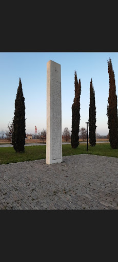

La colonna raggiunge strada Cacciatora, ai confini con Castello di Godego. E’ l’epilogo. Un gruppo di SS sale sugli alberi, altri a terra, fanno correre gruppi di uomini gridando: "Andate, conquistatevi la libertà", mentre i soldati dagli alberi sparano. In seguito si accaniranno sui corpi con il calcio dei fucili. Si salveranno solo Carlo Zanzerin, di 14 anni, e Angelo Moro, un cinquantenne liberato per testimoniare. Questi gruppi armati verranno poi bloccati e catturati. I paesi limitrofi sfidano i nazisti innalzando una croce di legno nel luogo dell'eccidio (come segno di vicinanza ai compaesani), il mattino del 30 aprile arrivano i parroci dei paesi vicini per accompagnare i caduti nei rispettivi paesi. Il partigiano Romano Olivetto, inizialmente inferocito, si reca a Campagnalta e consegna 800 soldati agli alleati il 30 aprile (Olivetto aveva detto "noi siamo ribelli non assassini"). Uno dei primi segni della diffusione dell'idea di un'Europa libera e unita.
